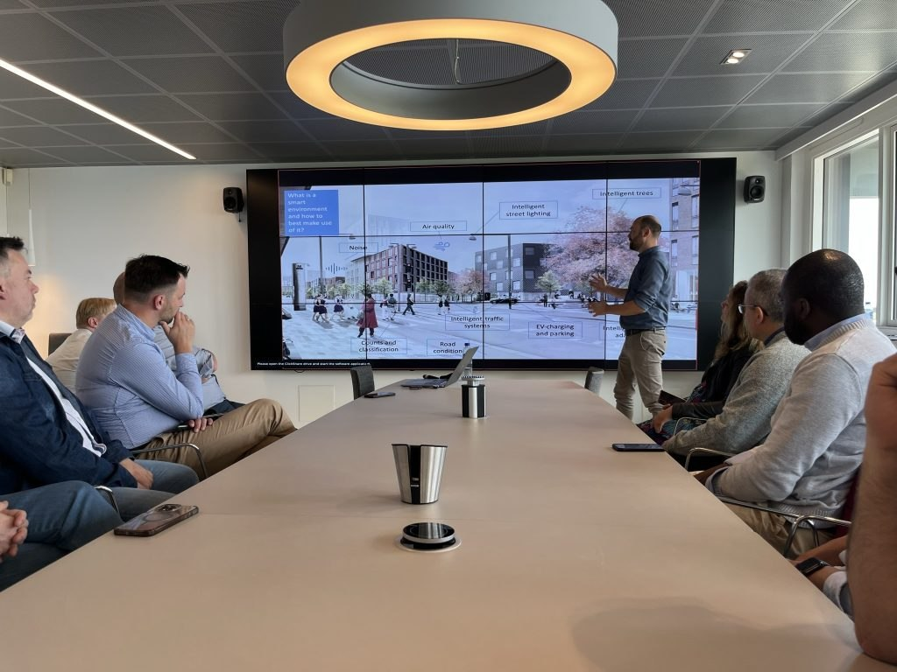
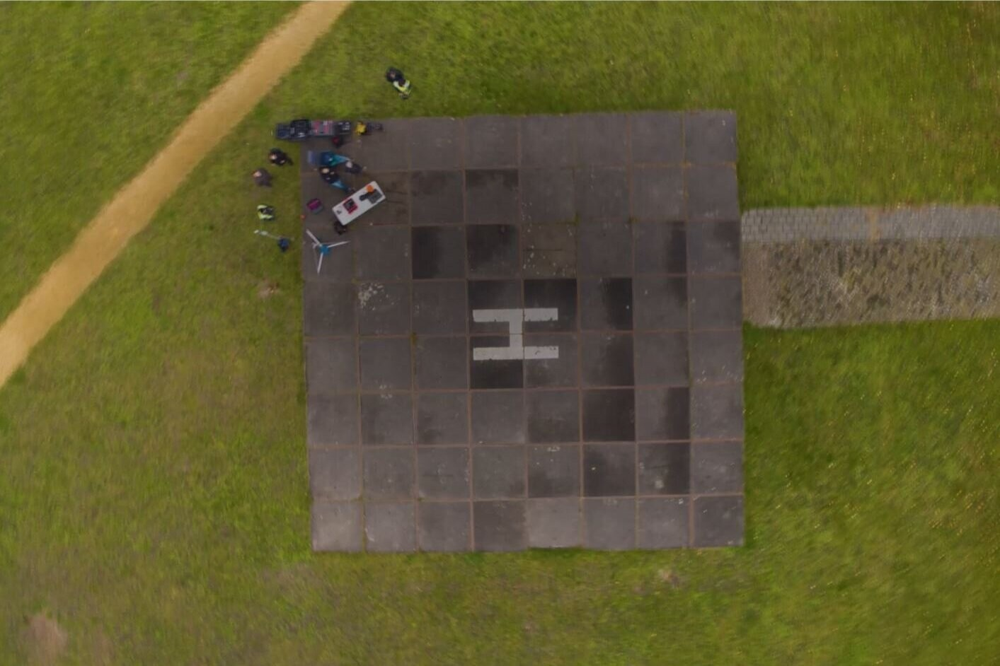

目的｜採用の判断に必要な証拠を集める
持ち帰る成果物は、事前の実験計画、実施記録、結果と限界、次の判断。開催できた、参加者が喜んだという事実だけでは、困りごとが減ったかは分からない。仕組みが予定どおり動いたか、変化が起きたか、その変化に資源を使う価値があるかを分けて考える。
HM TreasuryのMagenta Bookは、早期から評価を設計し、実施過程・影響・資源に見合う価値を検討する考え方を示す。小さな試行で仕組みを改善することと、大きな効果を確定する評価は異なる。本教材の実験計画は学習用の提案で、どの案件にも同じ期間や人数を当てはめるものではない。
進め方①｜始める前の状態と、比べる条件を置く
何もしなければどうなるかを考え、実施前の同じ場面の記録を取り始める。可能なら通常の案内を使う場面など、適切な比較対象を用意する。曜日、開設時間、担当者、相談の内容、募集方法、天候や他の催しを記録し、条件の差を説明できるようにする。
実施前後の改善だけでは、季節、広報、慣れ、参加した人の違いなどを除けない。比較する相手を無作為に分けていない場合は選択の偏りが残る。必要な支援を止めて比較群をつくるような設計は避ける。厳密な効果量が意思決定に必要なら、実施前に評価の専門家と対象数・方法を設計する。
- 主仮説と同時に『別の説明でもこの変化が起こるか』を書く。
- 比較が成立しない場合は、過程の記録・聞き取り・既存資料を照合し、因果の断定を限定する。
- 条件を途中で変えたら、変更日と理由を残し、同じ試験として混ぜない。
進め方②｜指標の定義・分母・担当をそろえる
指標には、誰をいつからいつまで数え、何を完了とし、誰がどの記録から測るかを付ける。集めやすい来訪者数だけに偏らない。途中離脱、回答しなかった人、紹介が届かなかった人を落とさず、分母と欠測の扱いを明示する。本人の意向で別の選択をした場合と、案内の失敗を区別する。
| 確かめること | 指標の定義例（教材の提案） | 記録する条件・担当 |
|---|---|---|
| 実施量（Output） | 案内を受けた人数と実施時間 | 重複と対象範囲を定義。受付担当が匿名集計 |
| 短期の変化（Outcome） | 次の行動を本人が説明できた人数／確認した人数 | 質問、確認時点、補助の有無、未回答数。調査担当 |
| 紹介の到達 | 本人が希望した紹介のうち、接続を確認できた件数／確認対象件数 | 同意のある範囲で方法と期限を固定。未確認を成功にしない |
| 運営負荷 | 受付・準備・連絡・片付け・記録の総時間 | 有償・無償と通常業務との差。運営担当 |
| 負担と公平性 | 待ち、中断、使えない理由、近隣や家族の追加負担 | 参加しない人にも届く別の聞き取り。調査担当 |
| 長期の変化（Impact） | 必要な支援へ継続してつながる状態等 | 長期追跡の別計画が必要。短期試行では未検証 |
進め方③｜日常の条件と例外を記録する
初日だけでなく、担当交代や混む時間、利用が少ない場面も観察できる計画にする。どの属性や条件を確認する必要があるかを先に決め、集める情報は判断に必要なものへ絞る。撮影の多さより、現場の行動と記録の整合を重視する。
現場責任者は重大な誤案内、相談の秘密を守れない状況、安全上の問題など、事前に決めた条件で停止できるようにする。評価担当は停止・失敗を含めて記録する。参加者には協力を断る方法、困ったときの連絡先、結果の返し方を知らせる。
- 開始前：使用する版、担当者、場所・時間、記録方法、停止条件を確認する。
- 実施中：介入した内容、通常と違う条件、予期しない出来事、途中変更を残す。
- 終了時：『やろうとしたことは何でしたか』『何ができず、どう対処しましたか』『負担が増えた人はいますか』と聞く。
- 終了後：運営担当と記録の食い違いを確認し、利用者に結果と対応を返す。
根拠：OECD・2022
記入例｜仮設窓口と通常の案内を比較する計画
教育用の架空案件『ひだまり地区』では、通常の案内の使われ方を記録した後、条件を記録しながら仮設窓口を試す。両方で『次の相談先と連絡方法を説明できるか』『どんな補助が必要か』『職員の総作業時間』を同じ定義で確認する。実験の実施、人数、結果、費用はすべて未確定・未測定。
主仮説は対面で選択を支えることが次の行動につながる、別仮説は広報を見た関心の高い人だけが参加するため良く見える、である。募集経路と非利用者の理由を調べ、効果が確認できない場合に宣伝不足だけを原因としない。現場で測れた変化の範囲を超えて、地域全体の孤立解消や行政費削減を主張しない。
出口｜成功報告ではなく、判断できる結果を渡す
すでに同じ条件で十分な根拠があるなら、重複実験を省き、今回違う条件だけ確かめる。比較条件や測定が崩れたときは『効果なし』ではなく『判断できない』と区別する。実施できても運営負荷が続かないなら03・07へ、原因が違えば01へ戻る。
引継ぎは、事前計画、匿名集計、測定定義、未回答・中断、費用と工数、変更履歴、反証、判断理由。Forum Virium HelsinkiとTest in Tallinnの事例は『誰の現場で、何を判断するために試すか』という問いで読む。実証に参加できることと、その後の採用が決まることを分ける。
WORKED EXAMPLE / 編集部による記入例
どこまで書けばよいか、例でつかむ。
以下は考え方を示す学習用の記入例です。実案件の実績・予算・合意を示すものではありません。
- 仮説・別仮説・今回決めたいこと
- 【教育用の架空計画】仮設窓口が次の相談行動を助けるかを確かめる。別仮説は募集に応じる人の偏り。採用判断の前に、案内と紹介の仕組みを続けて試すかを決める。
- 基準となる状態・比較・対象・期間
- 【架空の計画】通常案内と仮設窓口の場面を同じ課題・定義で記録する。日時・相談内容・募集経路の差も残す。対象数と期間は現場条件を確認して事前に決める。
- 測るもの・分母・記録者
- 【架空の計画】次の行動を説明できた人数／確認した人数、補助の有無、未回答、紹介の未確認、全作業時間を記録する。受付と評価の担当を分ける。
- 参加条件と停止条件
- 【架空の計画】個別に話せない、重大な誤案内が起きる、対応範囲外の相談を引き渡せない場合に受付を止める。現場責任者が停止し、企画責任者が改善確認後に再開を判断する。
- 担当・実施費・日程・最大負担
- 【架空の計画】実験費には募集、場所、設営、受付、連絡、測定、片付け、結果返却を含める。金額・時間の上限は未見積りのため、確定まで実施を承認しない。
- 結果に応じた次の判断と返却先
- 【架空の計画】次の行動の理解と運営負荷を事前基準で評価する。改善が見えても偏りが大きければ条件を変えて再検証する。結果・限界・対応を住民側の検討者と運営候補へ返す。
YOUR WORKSHEET / 自分の案件で考える
実験を始める前の計画書
結果欄は実測まで空欄にする。成功条件は、結果を見てから都合よく変えない。
入力はこのブラウザに自動保存されます。ほかの端末への引き継ぎには「バックアップ」と「読み込み」を使ってください。共有する前に、個人情報や非公開情報が含まれていないか確認してください。
何が変わると予想し、別の理由でも起こりうるかを記す。
記入例を参考にする
【教育用の架空計画】仮設窓口が次の相談行動を助けるかを確かめる。別仮説は募集に応じる人の偏り。採用判断の前に、案内と紹介の仕組みを続けて試すかを決める。
実施前、比較対象、対象の選び方、観察する条件をそろえ、残る偏りも書く。
記入例を参考にする
【架空の計画】通常案内と仮設窓口の場面を同じ課題・定義で記録する。日時・相談内容・募集経路の差も残す。対象数と期間は現場条件を確認して事前に決める。
実施量、短期変化、総工数、負担をそれぞれ定義する。欠測を除外するなら理由を書く。
記入例を参考にする
【架空の計画】次の行動を説明できた人数／確認した人数、補助の有無、未回答、紹介の未確認、全作業時間を記録する。受付と評価の担当を分ける。
説明、記録の扱い、断る方法、実験を止める観察、再開の判断者を決める。
記入例を参考にする
【架空の計画】個別に話せない、重大な誤案内が起きる、対応範囲外の相談を引き渡せない場合に受付を止める。現場責任者が停止し、企画責任者が改善確認後に再開を判断する。
準備から結果返却までの工数・費用と、超えたら変更する上限を事前に合意する。
記入例を参考にする
【架空の計画】実験費には募集、場所、設営、受付、連絡、測定、片付け、結果返却を含める。金額・時間の上限は未見積りのため、確定まで実施を承認しない。
継続、変更、中止、判断不能の条件、判断者、結果を返す日時・相手を記す。
記入例を参考にする
【架空の計画】次の行動の理解と運営負荷を事前基準で評価する。改善が見えても偏りが大きければ条件を変えて再検証する。結果・限界・対応を住民側の検討者と運営候補へ返す。
DECISION / 次に何をするか
進む。変える。いったん止める。
以下はMDLによる判断の手掛かりです。担当者と当事者で確認し、判断した日と理由をシートに残してください。
進める条件
事前に合意した改善の基準を満たし、負担が許容範囲で、運営候補が次の確認を引き受けるなら07の採用設計へ進む。根拠が短期・限定的なら条件付きの判断とする。
戻って、変える条件
一部の人にだけ届く、比較の偏りが大きい、運営工数が超える場合は対象・方法・体制を変えて再検証する。測定不足は判断不能として扱う。
保留・停止する条件
重大な不利益や事前の停止条件に該当したらその実施を止める。必要な改善が合理的に見込めず、負担を減らせない場合は案を終了し、結果と代替策を返す。
NEXT / 学びをつなぐ
事例と、ほかの工程へ。

Kalasatama, Helsinki · 2021-03-04
PHOTO: Abel111222 · 掲載元 ↗ · CC BY-SA 4.0 ↗ · 表示用に縮小。切り抜き・色変更なし。
Technopolis Ülemiste, Lõõtsa Street · 2023-06-23
PHOTO: Liilia Moroz · 掲載元 ↗ · CC BY-SA 4.0 ↗ · 表示用に縮小。切り抜き・色変更なし。

DOLL Living LabでのSmart EPC訪問団への説明 · 撮影日未公表／記事公開 2023-12-18
PHOTO: Energy Cities（Smart EPC訪問記事） · 掲載元 ↗ · CC BY-NC-SA 4.0（非営利の学習・解説用途） ↗ · 表示用に縮小。切り抜き・色変更なし。

PHOTO: Marineterrein · 掲載元 ↗ · CC BY 3.0 ↗ · 縮小・表示枠に合わせた切り抜き。色変更なし。
SOURCES / 原典を読む
根拠と、読み取れる範囲。
定義・資料に書かれたことと、教材としての整理・演習を区別しています。記入例と判断基準はMDLによる学習用の提案です。
HM Treasury / Evaluation Task Force · 2026
Magenta Book: Central Government guidance on evaluation ↗
何が分かるか：早期の評価設計、比較と基準データ、実施過程・影響・資源に見合う価値の区別、結果の適用範囲を確認できる。
読み取れる範囲・限界：英国中央政府の評価指針。本教材は統計設計や評価の専門助言を代替しない。四つの費用範囲、様式、数式の適用範囲は教材側の提案。
OECD · 2022
OECD Guidelines for Citizen Participation Processes — Chapter 2 ↗
何が分かるか：参加が意思決定へ及ぼせる範囲、参加する人の選び方、意見の扱いと結果返却、参加過程の評価を確認できる。
読み取れる範囲・限界：公的機関の市民参加を主な対象とする。参加者がいることだけで代表性や公平性を証明するものではない。
European Network of Living Labs（ENoLL）／SCORE project · 2024
Living Lab Integrative Process Video Series ↗
何が分かるか：当事者と現場の文脈を踏まえ、試作・試験・実装・展開を反復的に扱う学習構成を確認できる。
読み取れる範囲・限界：閲覧したのは公開説明であり、講座動画を視聴したとは扱わない。沿岸都市等を含む元の文脈から、地域案件の効果や標準工程を断定しない。